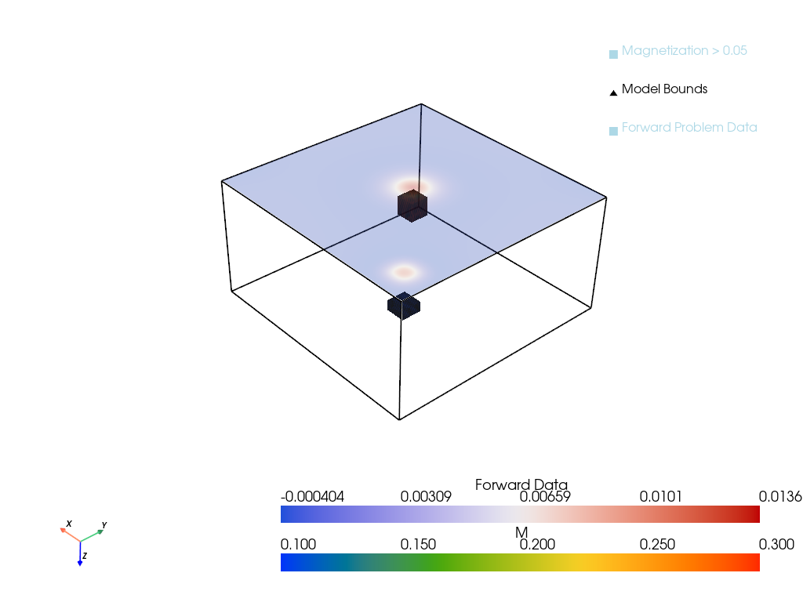
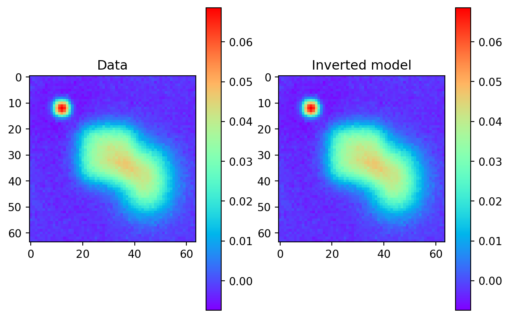
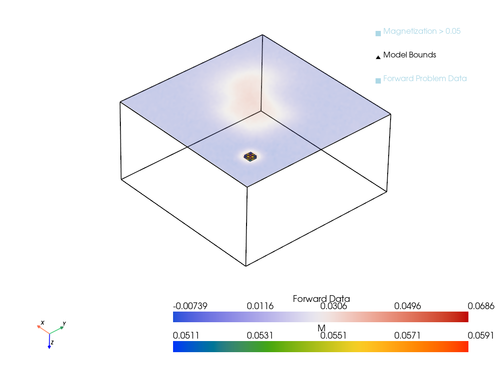

import torch
import torch.nn as nn
import numpy as np
from scipy.constants import mu_0
class Magnetics(nn.Module):
"""
A PyTorch module to perform forward and adjoint computations for magnetic inversion problems.
"""
def __init__(self, dim, h, dirs, device='cpu'):
"""
Initialize the Magnetics module.
Parameters:
dim (list or tuple): Mesh dimensions [nx, ny, nz].
h (list or tuple): Cell sizes [dx, dy, dz].
dirs (list or tuple): Magnetic field directions [I, A, I0, A0] in radians.
I - Magnetization dip angle
A - Magnetization declination angle
I0 - Geomagnetic dip angle
A0 - Geomagnetic declination angle
device (str): Device to perform computations ('cpu' or 'cuda').
"""
super(Magnetics, self).__init__()
self.dim = dim
self.h = h
self.dirs = dirs
self.device = device
# Compute the scaling factor
dV = torch.prod(self.h.clone().detach())
mu_0 = 1.0 # Magnetic permeability (set to 1 for simplicity)
zeta = mu_0 / (4 * np.pi)
self.mudV = zeta * dV
def fft_kernel(self, P, center):
"""
Compute the 2D shifted FFT of the kernel P.
Parameters:
P (torch.Tensor): The point spread function (PSF) kernel.
center (list): Center indices for fftshift.
Returns:
torch.Tensor: The shifted FFT of P.
"""
# Shift the kernel for FFT operations
S = torch.roll(P, shifts=center, dims=[0, 1])
S = torch.fft.fftshift(S)
# Compute the 2D FFT
S = torch.fft.fft2(S)
# Shift the quadrants back
S = torch.fft.fftshift(S)
return S
def forward(self, M, height=0):
"""
Perform the forward computation using FFT.
Parameters:
M (torch.Tensor): The magnetization model tensor of shape B,C,X,Y,Z.
Returns:
torch.Tensor: The computed magnetic data.
"""
dz = self.h[2]
z = height + dz / 2 # Starting depth
data = 0 # Initialize the data
# Loop through each layer in the z-direction
for i in range(M.shape[-1]):
# Extract the i-th layer of the model
m_layer = M[..., i].to(self.device)
# Compute the point spread function (PSF) for the current layer
psf, center, _ = self.psf_layer(z)
# Compute the FFT of the PSF kernel
s_fft = self.fft_kernel(psf, center)
# Compute the FFT of the model layer
m_fft = torch.fft.fftshift(m_layer)
m_fft = torch.fft.fft2(m_fft)
m_fft = torch.fft.fftshift(m_fft)
# Perform the convolution in the frequency domain
b_fft = s_fft * m_fft
b_fft = torch.fft.fftshift(b_fft)
# Convert back to the spatial domain
b_spatial = torch.real(torch.fft.ifft2(b_fft))
# Accumulate the data from each layer
data += b_spatial
# Update depth
z += dz
return self.mudV * data
def adjoint(self, data, height=0):
"""
Perform the adjoint operation.
Parameters:
data (torch.Tensor): The observed magnetic data tensor.
Returns:
torch.Tensor: The adjoint result (model update).
"""
dz = self.h[2]
z = height + dz / 2 # Starting depth
# Initialize the result tensor
m_adj = torch.zeros(
1, 1, self.dim[0], self.dim[1], self.dim[2], device=self.device
)
for i in range(self.dim[2]):
# Compute the PSF for the current layer
psf, center, _ = self.psf_layer(z)
# Compute the FFT of the PSF kernel
s_fft = self.fft_kernel(psf, center)
# Compute the FFT of the input data
data_fft = torch.fft.fft2(data)
data_fft = torch.fft.fftshift(data_fft)
# Perform the adjoint operation in the frequency domain
b_fft = torch.conj(s_fft) * data_fft
# Convert back to the spatial domain
b_spatial = torch.fft.fftshift(b_fft)
b_spatial = torch.real(torch.fft.ifft2(b_spatial))
b_spatial = torch.fft.fftshift(b_spatial)
# Store the result for the current layer
m_adj[..., i] = b_spatial
# Update depth
z += dz
return self.mudV * m_adj
def psf_layer(self, z):
"""
Compute the point spread function (PSF) for a layer at depth z.
Parameters:
z (float): The depth of the layer.
Returns:
psf (torch.Tensor): The computed PSF.
center (list): Center indices for fftshift.
rf (torch.Tensor): The radial factor (unused but computed for completeness).
"""
# Unpack magnetic field directions
I, A, I0, A0 = self.dirs # Dip and declination angles for magnetization and geomagnetic field
# Compute half-dimensions
nx2, ny2 = self.dim[0] // 2, self.dim[1] // 2
dx, dy = self.h[0], self.h[1]
# Create coordinate grids
x = dx * torch.arange(-nx2 + 1, nx2 + 1, device=self.device)
y = dy * torch.arange(-ny2 + 1, ny2 + 1, device=self.device)
X, Y = torch.meshgrid(x, y, indexing='ij')
# Center indices for fftshift
center = [1 - nx2, 1 - ny2]
# Compute the radial factor
rf = (X**2 + Y**2 + z**2) ** 2.5
# Compute components of the PSF
cos_I = torch.cos(I)
sin_I = torch.sin(I)
cos_A = torch.cos(A)
sin_A = torch.sin(A)
cos_I0 = torch.cos(I0)
sin_I0 = torch.sin(I0)
cos_A0 = torch.cos(A0)
sin_A0 = torch.sin(A0)
PSFx = ((2 * X**2 - Y**2 - z**2) * cos_I * sin_A +
3 * X * Y * cos_I * cos_A +
3 * X * z * sin_I) / rf
PSFy = (3 * X * Y * cos_I * sin_A +
(2 * Y**2 - X**2 - z**2) * cos_I * cos_A +
3 * Y * z * sin_I) / rf
PSFz = (3 * X * z * cos_I * sin_A +
3 * Y * z * cos_I * cos_A +
(2 * z**2 - X**2 - Y**2) * sin_I) / rf
# Combine components to get the total PSF
psf = (PSFx * cos_I0 * cos_A0 +
PSFy * cos_I0 * sin_A0 +
PSFz * sin_I0)
return psf, center, rfProject Work 1
Applications of Machine Learning in Geophysics
Machine Learning
Neural Networks
Geophysics
Geomagnetic inversions are a common problem in geophysics where the goal is to recover a 3D distribution of the conductivity of a section of Earth using magnetic field measurements taken over a 2D surface above ground. The problem is ill-posed and requires advanced techniques to recover data that matches the true distribution. In this project, a series of advanced techniques are used to try and recover true distributions.
$$
$$
Motivation
Geomagnetic inversion from recovered magnetic readings above ground is a classic problem in geophysics. Much of the data that we have about subsurface geology must be collected via indirect methods such as magnetic and seismic surveys, or sparse sampling via boreholes. The data can be expensive to collect, where the objective is to detect underground structures such as ore bodies, oil and gas deposits, or aquifers. The goal is to recover a 3D distribution of some of the physical properties of the Earth from the incomplete data, a non-linear and ill-posed problem.
This project explores the use of machine learning and optimization techniques to attempt an inversion of the data, using electromagnetic equations to model the propogation of the Earth’s magnetic field through the subsurface on a known data set. The goal is to develop a model that can take the forward problem data and invert it to recover the true starting distribution.
Background
A background on the magnetic principles that underpin the problem can be found at Geophysics for Practicing Geophysicists.
The subsurface of the Earth is composed of materials with differences in magnetic susceptibility \(\chi\) and conductivity \(\sigma\). The magnetic susceptibility relates a material’s magnetization \(M\) to the magnetic field \(H\) via the equation \(M = \chi H\). When the magnetic field of the Earth passes through this material it creates a magnetization response, causing small magnetic anomolies that can be measured above ground. The magnetic field passing through the subsurface is assumed to be uniform and known over the survey area.
The magnetization effect can be calculated by integrating the magnetic effect over each infinetesimally small volume of the subsurface, since the total effect will be the sum of the parts, similar to analysing electric fields from charge distributions. It is easier to first calculate the magnetic potential and then take the curl to get the field:
\[\mathbf{B}(r) = \nabla \times \mathbf{A}(r) \] \[\mathbf{A}(r) = \frac{\mu_0}{4\pi} \int_V \mathbf{M}(r') \frac{1}{|\mathbf{r} - \mathbf{r'}|} dV'\]
where \(\mathbf{B}\) is the magnetic field, \(\mathbf{A}\) is the magnetic potential, \(\mathbf{M}\) is the magnetization, and \(\mu_0\) is the magnetic permeability of free space. The equations above are for the case where there are no free currents, which is a good assumption to make for the Earth’s subsurface.
The integral is of the form of a convolution with the kernel \(\frac{1}{|\mathbf{r} - \mathbf{r'}|}\), which can be computed using the Fast Fourier Transform (FFT) to speed up the computation. The operation \(\mathbf{B}(r) = \nabla \times \mathbf{A}(r)\) can also be carried through into the integral since it is a linear operator.
Using all of the above information yields the integral equation that is dependent on the magnetic susceptibility \(\chi\) and the magnetic field \(\mathbf{H}_0\):
\[ \mathbf{B}_A(\mathbf{r}) = \frac{\mu_0}{4\pi} \int_V \chi(\mathbf{r'}) \mathbf{H}_0 \cdot \nabla^2 \left( \frac{1}{|\mathbf{r} - \mathbf{r'}|} \right) dV' \]
The resulting magnetic field anomaly \(\mathbf{B}_A\) is projected onto the direction of the magnetic field \(\mathbf{H}_0\) to get the observed anomaly in magnetic field strength at any point above the Earth’s surface in the forward model. For survey work, the probed field is usually measured over a planar surface above the ground, forming a 2D image.
See Geophysics for Practicing Geophysicists for more images and interactive examples.
Coding the Forward Model
The model is programmed into the Magnetics class below. Note that the FFT is used to speed up the computation of the convolution integral. An explicit adjoint operation is defined to speed up the process of inverting data when using techniques that make use of it.
To test the forward and adjoint operations we can apply a standard adjoint test. This is always a good policy when implementing new operators to determine if there are any issues with the code. We expect that \[ \langle A(X), Q \rangle = \langle X, A^*(Q) \rangle \]
where \(A\) is the forward operator and \(A^*\) is the adjoint operator. The code below performs the adjoint test for the forward model defined above.
Show the code
import pyvista as pv
pv.set_jupyter_backend("static")
def adjoint_test(op, adj, arg):
"""
Adjoint test for a given operator.
Parameters:
op (callable): Forward operator.
adj (callable): Adjoint operator.
arg (torch.Tensor): Input to the forward operator.
"""
X = arg
D = op(X)
Q = torch.rand_like(D)
# Compute the inner product <A(X), Q>
inner_prod1 = torch.sum(D * Q)
# Compute the inner product <X, adj(Q)>
W = adj(Q)
inner_prod2 = torch.sum(X * W)
print("Adjoint test:", inner_prod1.item(), inner_prod2.item())
# Set a magnetics model
dx, dy, dz = 100.0, 100.0, 100.0
n1, n2, n3 = 256, 256, 128
dim = torch.tensor([n1, n2, n3])
h = torch.tensor([dx, dy, dz])
dirs = torch.tensor([np.pi / 2, np.pi / 2, np.pi / 2, np.pi / 2])
forMod = Magnetics(dim, h, dirs)
# set the magnetization of the material
M = torch.zeros(*dim)
M[120:140, 120:140, 20:40] = 0.3
M[20:40, 20:40, 10:20] = 0.1
M = M.unsqueeze(0).unsqueeze(0)
adjoint_test(forMod.forward, forMod.adjoint, M) Adjoint test: 4.638533115386963 4.638533592224121Plotting the Model
A simple toy dataset was used to test the adjoint opearation. It is very helpful to have a set of visualization tools to verify the input and output data against expected values. A library of commands that make use of Pyvista are provided below.
Show the code
def plot_model_2d(M, n_slices=None, cmap="rainbow", figsize=(12, 6)):
"""
Plot an array of 2D slices for a given 3D tensor in a single grid-style plot.
Parameters:
- M (torch.Tensor): 3D tensor representing the model (e.g., [x, y, z]).
- n_slices (int, optional): Number of slices to plot. Defaults to all slices.
- cmap (str): Colormap for the plot.
- figsize (tuple): Size of the figure.
Returns:
- matplotlib.figure.Figure: The created figure.
"""
import numpy as np
import matplotlib.pyplot as plt
# Dimensions of the 3D tensor
nx, ny, nz = M.shape[-3], M.shape[-2], M.shape[-1]
# Determine the number of slices
if n_slices is None:
n_slices = nz
else:
n_slices = min(n_slices, nz)
# Determine the grid shape (rows and columns)
ncols = int(np.ceil(np.sqrt(n_slices)))
nrows = int(np.ceil(n_slices / ncols))
# Create a blank canvas for the grid plot
grid = torch.zeros((nrows * nx, ncols * ny), dtype=M.dtype, device=M.device)
# Fill the grid with slices
slice_idx = 0
for i in range(nrows):
for j in range(ncols):
if slice_idx < n_slices:
grid[i * nx:(i + 1) * nx, j * ny:(j + 1) * ny] = M[..., slice_idx]
slice_idx += 1
# Plot the grid
fig = plt.figure(figsize=figsize)
plt.imshow(grid.cpu().detach().numpy(), cmap=cmap)
plt.colorbar()
plt.axis("off")
plt.tight_layout()
plt.show()
def plot_model(M, plotter = None, threshold_value=0.05):
"""
Plot the magnetization model with an outline showing the overall bounds.
Parameters:
M (torch.Tensor): Magnetization model tensor of shape [B, C, X, Y, Z] or [X, Y, Z].
threshold_value (float): Threshold value for magnetization to visualize.
"""
if plotter is None:
plotter = pv.Plotter()
# Remove unnecessary dimensions if present
M = torch.squeeze(M)
# Convert the PyTorch tensor to a NumPy array
m_plot = M.detach().cpu().numpy()
# Define grid parameters
spacing = (1.0, 1.0, 1.0)
origin = (0.0, 0.0, 0.0)
# Create a PyVista Uniform Grid (ImageData)
grid = pv.ImageData()
# Set grid dimensions (number of points = cells + 1)
grid.dimensions = np.array(m_plot.shape) + 1
grid.spacing = spacing
grid.origin = origin
# Assign magnetization data to cell data
grid.cell_data["M"] = m_plot.flatten(order="F")
# Apply threshold to isolate regions with M > threshold_value
thresholded = grid.threshold(value=threshold_value, scalars="M")
# Create an outline of the entire grid
outline = grid.outline()
# Add the thresholded mesh
plotter.add_mesh(thresholded, cmap = "rainbow", opacity=0.5, show_edges=True, label='Magnetization > {:.2f}'.format(threshold_value))
# Add the outline mesh
plotter.add_mesh(outline, color="black", line_width=2, label='Model Bounds')
# Optionally, add axes and a legend for better context
plotter.add_axes()
plotter.add_legend()
# Set camera position for better visualization (optional)
plotter.view_isometric()
return plotter
def plot_model_with_slider(M):
"""
Plot the magnetization model with an interactive slider for threshold value.
Parameters:
M (torch.Tensor): Magnetization model tensor of shape [B, C, X, Y, Z] or [X, Y, Z].
"""
# Remove unnecessary dimensions if present
M = torch.squeeze(M)
# Convert the PyTorch tensor to a NumPy array
m_plot = M.detach().cpu().numpy()
# Define grid parameters
spacing = (1.0, 1.0, 1.0)
origin = (0.0, 0.0, 0.0)
# Create a PyVista Uniform Grid (ImageData)
grid = pv.ImageData()
# Set grid dimensions (number of points = cells + 1)
grid.dimensions = np.array(m_plot.shape) + 1
grid.spacing = spacing
grid.origin = origin
# Assign magnetization data to cell data
grid.cell_data["M"] = m_plot.flatten(order="F")
# Create an outline of the entire grid
outline = grid.outline()
# Create a PyVista plotter
plotter = pv.Plotter()
plotter.add_mesh(outline, color="black", line_width=2, label='Model Bounds')
# Add axes and a legend
plotter.add_axes()
plotter.add_legend()
# Set camera position for better visualization
plotter.view_isometric()
# Define a callback function for the slider
def threshold_callback(value):
# Remove previous thresholded mesh if exists
if 'thresholded' in plotter.actors:
plotter.remove_actor('thresholded')
# Apply threshold to isolate regions with M > value
thresholded = grid.threshold(value=float(value), scalars="M")
# Add the thresholded mesh
plotter.add_mesh(thresholded, name='thresholded', cmap="rainbow", opacity=0.5, show_edges=True, label=f'Magnetization > {value:.2f}')
plotter.render()
# Initial threshold value
initial_threshold = 0.05
# Apply initial threshold and plot
thresholded = grid.threshold(value=initial_threshold, scalars="M")
plotter.add_mesh(thresholded, name='thresholded', cmap="rainbow", opacity=0.5, show_edges=True, label=f'Magnetization > {initial_threshold:.2f}')
# Add the slider widget
plotter.add_slider_widget(
threshold_callback,
[0.0, np.max(m_plot)],
value=initial_threshold,
title='Threshold Value',
pointa=(0.025, 0.1),
pointb=(0.225, 0.1),
style='modern',
)
# Show the plot
plotter.show()
def plot_model_with_forward(
mag_data,
forward_data,
spacing=(1.0, 1.0, 1.0),
height=0,
zoom=1.0,
plotter=None,
threshold_value=0.05,
):
if plotter is None:
plotter = pv.Plotter()
# Remove unnecessary dimensions if present
M = mag_data.squeeze()
M = M.cpu().numpy()
D = forward_data.squeeze().cpu().numpy()
# Define grid parameters XYZ spacing
origin = (0.0, 0.0, 0.0)
# Create a PyVista Uniform Grid (ImageData) for the 3D volume
grid = pv.ImageData()
# Set grid dimensions (number of points = cells + 1)
grid.dimensions = np.array(M.shape) + 1
grid.spacing = spacing
grid.origin = origin
# Assign magnetization data to cell data
grid.cell_data["M"] = M.flatten(order="F")
# Apply threshold to isolate regions with M > threshold_value
thresholded = grid.threshold(value=threshold_value, scalars="M").flip_z()
outline = grid.outline()
# Add the thresholded mesh
plotter.add_mesh(
thresholded,
cmap="rainbow",
opacity=0.7,
show_edges=True,
label="Magnetization > {:.2f}".format(threshold_value),
)
# Add the outline mesh
plotter.add_mesh(outline, color="black", line_width=2, label="Model Bounds")
# Create a structured grid for the 2D surface data
nx, ny = D.shape
x = np.linspace(0, nx * spacing[0], nx)
y = np.linspace(0, ny * spacing[1], ny)
X, Y = np.meshgrid(x, y)
Z = np.full_like(X, -height) # Position the surface above the volume
# Create a PyVista mesh for the 2D surface
surface_mesh = pv.StructuredGrid(X, Y, Z)
surface_mesh.point_data["Forward Data"] = D.flatten(order="F")
# Add the 2D surface to the plotter
plotter.add_mesh(
surface_mesh,
cmap="coolwarm",
show_edges=False,
opacity=0.3,
label="Forward Problem Data",
)
# Add axes and a legend
plotter.add_axes()
plotter.add_legend()
plotter.camera_position = [
(-54507.19712327622, -49446.175185560685, -53221.11813207309),
(128.0, 128.0, 64.0),
(0.44554389292076074, 0.38017371952961604, -0.8105298158982375),
]
# Adjust the zoom to fit data in window
plotter.camera.zoom(zoom)
return plotterp = pv.Plotter()
D = forMod(M)
D = D.squeeze()
p = plot_model_with_forward(M, D, h, height=0, plotter=p)
output_file = "imgs/magnetic_inversion_plot.png"
p.show(screenshot=output_file)
Inverting the Magnetic Readings
The magnetic anomaly readings above ground are but a 2D slice from the 3D data that is being recovered. This is like trying to reconstruct a 3D object from the shadow that it casts, a very ill conditioned problem. To get a gauge of the problem difficulty we attempt a simple inversion using the conjugate gradient method developed in earlier lectures.
The inversion problem is to recover the magnetization model \(M\) from the observed magnetic data \(D\) using the forward model \(A\), its adjoint \(A^*\), and the conjugate gradient method. The null space of the forward operator is quite large, meaning there are infinite possible solutions, so a regularization term is added to the objective function to constrain the solution. The model is
\[D = A(M) + \epsilon\]
where \(\epsilon\) is the noise in the data.
Objective Function
The objective function to minimize is
\[ J(M) = \frac{1}{2} \| A(M) - D \|_2^2 + \alpha R(M) \]
where \(R(M)\) is the regularization term and \(\alpha\) is the regularization parameter. In this example a weight matrix \(W\) is used on the flattened magnetic data.
\[ R(M) = \frac{1}{2} \| W(M) \|_2^2\]
The solution to this problem is given in Lecture 4 using the normal equations.
\[ (A^*A + \alpha W^*W) M_{sol} = A^*D\]
The conjugate gradient method is used to solve the system of equations. The adjoint of the regularization term is also defined to speed up the process of inverting data when using techniques that make use of it.
Regularization Implementation
The penalty or prior that this is to incur is the finite difference between neighboring cells in the model. This is an approximation of the gradient at each point in the magnetic data, functioning as a slope penalty regularization as discussed previously in Lecture 8.
The finite difference matrix in 1D is
\[W = \begin{bmatrix} 1 & -1 & 0 & \cdots & 0 \\0 & 1 & -1 & \cdots & 0 \\\vdots & \vdots & \vdots & \ddots & \vdots \\0 & 0 & 0 & \cdots & -1 \end{bmatrix}\]
and it can be extended to 2D and 3D by applying the finite difference in each dimension over the flattened data, thus it is a linear operator. It is simpler to compute the value as a summation in practice, applied to the flattened data: \[\|W(M)\|^2 = \sum_i^N\sum_j^S\sum_k^Q (M_{i,j,k} - M_{i+1,j,k})^2 + (M_{i,j,k} - M_{i,j+1,k})^2 + (M_{i,j,k} - M_{i,j,k+1})^2\] We take the mean over each dimension to normalize across any small variations in the data size due to the loss of boundary cells when applying the finite difference.
A generalized linear adjoint computation in PyTorch is also defined in code, so that the regularization term has a defined adjoint operation for the optimization algorithm. The regularization term to be defined is the operator before the squared norm is applied.
def regularization(x):
gx = x[:,:,1:,:,:] - x[:,:,:-1,:,:]
gy = x[:,:,:,1:,:] - x[:,:,:,:-1,:]
gz = x[:,:,:,:,1:] - x[:,:,:,:,:-1]
# Concatenate the flattened gradients together and return as the W(M) vector
return torch.cat([torch.flatten(gx), torch.flatten(gy), torch.flatten(gz)])
def adjoint(A, v, x_sample):
"""
Take the adjoint of the forward operator A with respect to the input vector v.
Parameters:
A (callable): Forward operator.
v (torch.Tensor): Input vector.
x_sample (torch.Tensor): Sample input for dimensioning (dummy data).
"""
x = torch.zeros_like(x_sample)
x.requires_grad = True
b = A(x)
# Compute the dot product of the forward operator with the input vector
h = torch.sum(b * v)
# Compute the gradient of the dot product with respect to the input image
adjoint = torch.autograd.grad(h, x, create_graph=True)[0]
return adjointData Set for Fitting
A new data set with three blocks is created for a more interesting test case.
Show the code
def gen_true_data(dim):
# set the magnetization model
xtrue = torch.zeros(*dim)
xtrue[30:50, 40:50, 10:20] = 0.6
xtrue[20:40, 20:40, 5:15] = 0.2
xtrue[10:15, 10:15, 2:5] = 0.5
return xtrue
# Set the model parameters
n1 = 64
n2 = 64
n3 = 32
dim = torch.tensor([n1,n2,n3])
h = torch.tensor([100.0, 100.0, 100.0])
dirs = torch.tensor([np.pi/2, np.pi/2, np.pi/2, np.pi/2])
forMod = Magnetics(dim, h, dirs)
# Generate the true data
xtrue = gen_true_data(dim)
xtrue = xtrue.unsqueeze(0).unsqueeze(0)
D = forMod(xtrue)
noise = torch.randn_like(D)
D = D + 0.001*noise
# Plot the true model and forward data
p = pv.Plotter()
p = plot_model_with_forward(xtrue, D, h, height=0, zoom = 4.0, plotter=p)
output_file = "imgs/magnetic_inversion_proj.png"
p.show(screenshot=output_file)
Conjugate Gradient Method
The equation to solve is \((A^*A + \alpha W^*W) M_{sol} = A^*D\) which should be defined in the standard form for a conjugate gradient problem, \(Cx = b\). To fit this form a new linear operator \(C\) is defined as \(C := A^*A + \alpha W^*W\) and the right hand side \(b = A^*D\). The conjugate gradient method is then applied to solve the system of equations.
import matplotlib.pyplot as plt
def conj_gradient(A, b, x0=None, niter=20, tol=1e-2, alpha=1e-2, verbose=True):
"""
Solve Ax=b using the conjugate gradient method.
Paramters:
A (callable): A function that computes the operator Ax.
b (torch.Tensor): The right-hand side vector.
x0 (torch.Tensor, optional): The initial guess. Defaults to None.
niter (int, optional): Maximum number of iterations. Defaults to 20.
tol (float, optional): Tolerance for the residual. Defaults to 1e-2.
alpha (float, optional): Step size for the conjugate gradient method. Defaults to 1e-2.
"""
if x0 is None:
r = b
else:
r = b - A(x0)
q = r
x = torch.zeros_like(b)
for i in range(niter):
Aq = A(q)
alpha = (r * r).sum() / (q * Aq).sum()
x = x + alpha * q
rnew = r - alpha * Aq
beta = (rnew**2).sum() / (r**2).sum()
q = rnew + beta * q
r = rnew.clone()
if verbose:
print("iter = %3d res = %3.2e" % (i, r.norm() / b.norm()))
if r.norm() / b.norm() < tol:
break
return x
# Generate the true data
xtrue = gen_true_data(dim)
xtrue = xtrue.unsqueeze(0).unsqueeze(0)
D = forMod(xtrue)
noise = torch.randn_like(D)
D = D + 0.001*noise
# Define the forward operator with regularization
reg_param = 1e-4
reg_func = lambda x: regularization(x)
def A(x, alpha=reg_param):
y1 = forMod(x)
y1 = forMod.adjoint(y1)
y2 = reg_func(x)
y2 = adjoint(reg_func, y2, x)
return y1 + alpha*y2
b = forMod.adjoint(D)
# Check dimensions and functioning
y = A(xtrue)
# Solve the inverse problem using the conjugate gradient method
x0 = torch.zeros_like(xtrue)
xinv = conj_gradient(A, b, x0, niter=20, tol=1e-6, alpha=1e-2, verbose=True)
# Verify that the gradient is zero at the solution
xtest = xinv.clone().detach().requires_grad_(True)
loss = 0.5 * (D - forMod(xtest)).norm()**2 + 0.5 * reg_param * torch.sum(reg_func(xtest)**2)
loss.backward()
# Print the norm of the gradient
gradient_norm = xtest.grad.norm().item()
print(f"Gradient norm at xinv: {gradient_norm:.6e}")
# Get misfit and regularization
misfit = 0.5 * (D - forMod(xinv)).norm()**2
reg = 0.5 * reg_param * torch.sum(reg_func(xtest)**2)
print(f"Misfit: {misfit:.6e}, Regularization: {reg:.6e}")
# Optionally, set a tolerance and assert
tolerance = 1e-4
if gradient_norm < tolerance:
print(f"Verification Passed: Gradient norm {gradient_norm:.2e} is below the tolerance {tolerance:.2e}.")
else:
print(f"Verification Failed: Gradient norm {gradient_norm:.2e} exceeds the tolerance {tolerance:.2e}.")iter = 0 res = 1.47e-01
iter = 1 res = 3.31e-02
iter = 2 res = 6.97e-03
iter = 3 res = 1.34e-03
iter = 4 res = 2.93e-04
iter = 5 res = 1.38e-04
iter = 6 res = 2.79e-04
iter = 7 res = 1.43e-03
iter = 8 res = 4.25e-03
iter = 9 res = 1.72e-03
iter = 10 res = 3.04e-04
iter = 11 res = 7.72e-05
iter = 12 res = 8.64e-05
iter = 13 res = 3.84e-04
iter = 14 res = 1.96e-03
iter = 15 res = 1.21e-03
iter = 16 res = 1.94e-04
iter = 17 res = 6.02e-05
iter = 18 res = 9.90e-05
iter = 19 res = 4.94e-04
Gradient norm at xinv: 4.354817e-04
Misfit: 7.700652e-08, Regularization: 1.644024e-05
Verification Failed: Gradient norm 4.35e-04 exceeds the tolerance 1.00e-04.Now that the inversion is performed, the results can be checked against the true forward model to see if they match correctly.
Show the code
# Plot the results
pred = forMod(xinv) # predicted 2d data
plt.subplot(1, 2, 1)
plt.imshow(D.view(n1, n2).cpu().detach().numpy(), cmap='rainbow')
plt.title('Data')
plt.colorbar()
plt.subplot(1, 2, 2)
plt.imshow(pred.view(n1,n2).cpu().detach().numpy(), cmap='rainbow')
plt.title('Inverted model')
plt.colorbar()
plt.show() 
This looks like a perfect fit, but as we will see, the method has done a poor job of recovering the true model.
Results
The inverted model can be plotted to see how well the inversion has performed.
Show the code
p = pv.Plotter()
p = plot_model_with_forward(xtrue, D, h, height=0, zoom = 4.0, threshold_value=0.05, plotter=p)
p.show()
p = pv.Plotter()
xinv = xinv.detach().cpu()
p = plot_model_with_forward(xinv, D, h, height=0, zoom = 4.0, threshold_value=.05, plotter=p)
p.show()

Show the code
# Plot the true and inverted models
plot_model_2d(xtrue, figsize=(3,3))
plot_model_2d(xinv, figsize=(3,3))

The inversion is clearly a failure. The magnetic distrbution for a material with a lower susceptibility that is close to the surface will produce an identical 2D magnetic field to the true data which is material buried much deeper. The model has a preference for shallow material, as material that is far away is more susceptible to noise and closer to the null space of the forward operator.
To try and recover the true magnetic model, a more sophisticated inversion method is required. One such method is decribed in a review paper by Crespo et. al (Crespo Marques et al. 2019) and is a topic of exploration in the next project section, where a sparse recovery technique will be used to recover the true model.
References
Crespo Marques, Elaine, Nilson Maciel, Lirida Naviner, Hao Cai, and Jun Yang. 2019. “A Review of Sparse Recovery Algorithms.” IEEE Access 7: 1300–1322. https://doi.org/10.1109/access.2018.2886471.